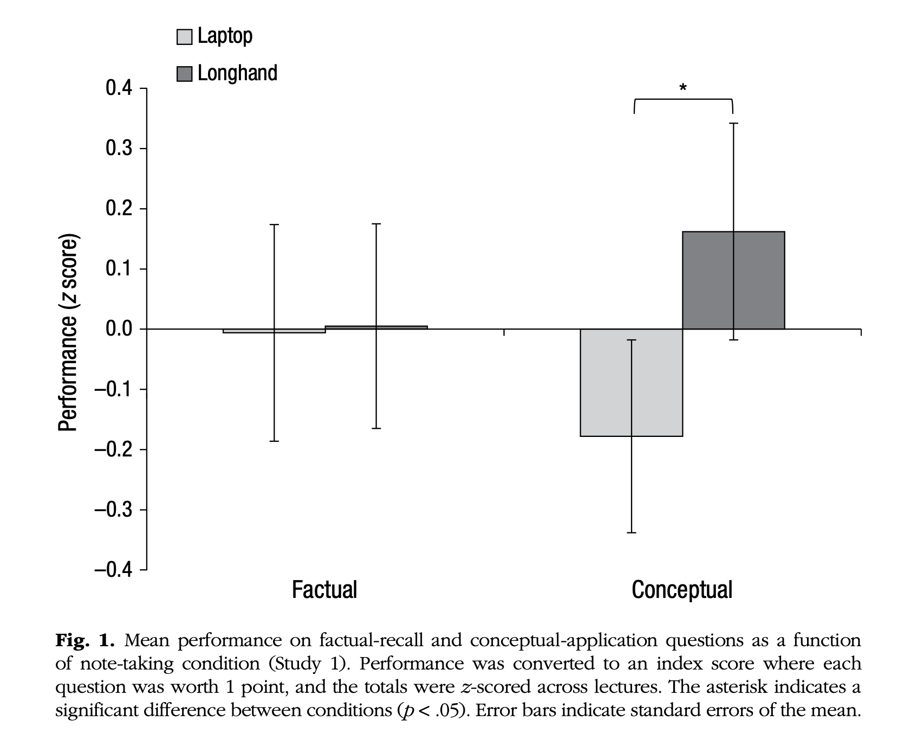

Using psychology to learn psychology
What to do in lectures might seem obvious, but is it?
Overview
What to do in lectures might seem obvious, but is it really?
Everyone will have their own view about how to make the most of lectures, and what techniques will work best. However, Psychology is about producing empirical evidence to support this sort of claim. Ideally, we want to make decisions based on the best available evidence, rather than guesses or hunches.
Let’s focus on a specific example:
How should students make notes in lectures?
Specifically, should students use laptops or make handwritten notes?
Please read the extract from this journal article, which describes a study conducted in 2014 with students at Princeton University
Except from: Mueller & Oppenheimer (2014), The Pen Is Mightier Than the Keyboard: Advantages of Longhand Over Laptop Note Taking. Psychological Science, 25(6), 1159-1168.
STUDY 1
Participants were 67 students (33 male, 33 female, 1 unknown) from the Princeton University subject pool. Two participants were excluded, 1 because he had seen the lecture serving as the stimulus prior to participation, and 1 because of a data-recording error.
Materials: We selected five TED Talks https://www.ted.com/talks) for length (slightly over 15 min) and to cover topics that would be interesting but not common knowledge.2 Laptops had full-size (11-in. × 4-in.) keyboards and were disconnected from the Internet.
Procedure: Students generally participated 2 at a time, though some completed the study alone. The room was preset with either laptops or notebooks, according to condition. Lectures were projected onto a screen at the front of the room. Participants were instructed to use their normal classroom note-taking strategy, because experimenters were interested in how information was actually recorded in class lectures. The experimenter left the room while the lecture played. Next, participants were taken to a lab; they completed two 5-min distractor tasks and engaged in a taxing working memory task (viz., a reading span task; Unsworth, Heitz, Schrock, & Engle, 2005). At this point, approximately 30 min had elapsed since the end of the lecture. Finally, participants responded to both factual-recall questions (e.g., “Approximately how many years ago did the Indus civilization exist?”) and conceptual-application questions (e.g., “How do Japan and Sweden differ in their approaches to equality within their societies?”) about the lecture and completed demographic measures.
The first author scored all responses blind to condition. An independent rater, blind to the purpose of the study and condition, also scored all open-ended questions. Initial interrater reliability was good (α = .89); score disputes between raters were resolved by discussion. Longhand notes were transcribed into text files.
The main results of this study were presented in a graph, shown below (Fig. 1). The y axis shows z scores, which are a way of comparing different scores on the same scale. Note that the average score of a z score will always be zero:

Instructions
Summarise the text and the result shown in the figure in your own words. Be concise: no more than 50 words.
Reflect on what the study tells us, and how it might influence what you do in lectures.
Summarising
A good strategy for summarising:
First, copy and paste the section above into a new document
Then, summarise the text by:
- Cutting irrelevant information
- Rephrasing sentences which remain to keep only the sense of the original text
Aim for a very concise summary of about 3-4 short sentences (no more than 50 words).
Reflect on what we learn
When you have summarised the text, think carefully about what we can learn from this study.
In particular, you might like to consider these questions:
- Is the study finding clear?
- Does the data gathered relate to your own circumstances?
- Is this ‘good’ evidence?
- Has it changed your mind about how you might take notes in lectures?
IMPORTANT: There may not be a simple ‘right’ answer to these questions. The goal is to think critically about the study and how it might influence your own behaviour.
Recording your work and getting feedback
The task is to:
- write the summary (3 or 4 short sentences), and
- add a short reflection (1 or 2 paragraphs max) on the questions above
When complete, upload your answer to Psybot to get some feedback.